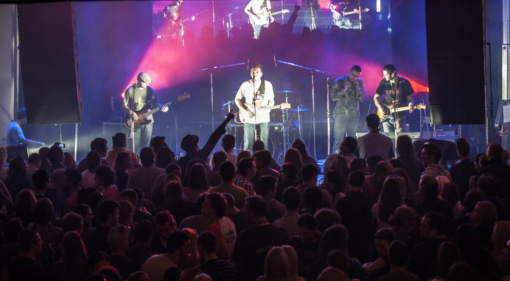

Grupa Šinobusi osnovana je 2001. godine u Novom Sadu. Bend je isprva funkcionisao kao akustični trio, a krajem 2002. godine priključila se ritam sekcija. Istovremeno su akustične gitare zamenili električnim. U prvoj postavi benda bili su usni harmonikaš Slobodan Mirić, gitarista i pevač Milan Korać, slajd gitarista Ðorđe Adžaip, basista Predrag Dmitrović i bubnjar Nikola Dukić. Sastav brzo postaje koncertno aktivan i svira obrade poznatih ritam & bluz standarda u klubovima širom Vojvodine. Prvi je nastup održan 4. januara 2003. godine u Apatinu. Već posle nekoliko meseci, bend odlučuje da se posveti stvaranju autorske muzike, a kako se u to vreme većina članova bavila pisanjem poezije, opredeljuju se za tekstove na maternjem jeziku.
U novembru 2003. godine, u studiju Komandant Adam u Sremskoj Kamenici, Šinobusi snimaju album prvenac koji je u junu 2005. objavljen pod nazivom Nekad jurimo kroz polja, a nekad stojimo u stanicama, za beogradsku izdavačku kuću City Records. Među jedanaest pesama, na albumu se našla i kantri-bluz verzija poznate kompozicije Kraj jezera vojvođanskog kantautora Zvonka Bogdana. U snimanju prvenca, osim članova grupe, učestvovao je i Dejan Dobrijević, a propratni tekst na omotu izdanja napisao je Dragan Uzelac.
U maju 2005. godine u bend dolazi novi bubnjar Ðorde Bubnjević, a u avgustu ‒ profilisani gitarista Nenad Patković. Te godine bend promoviše svoj prvi album nastupajući na festivalima: EXIT 05, 12. Internacionalni moto fest u Novom Sadu, 5. Internacionalni Blues i Jazz Festival u Šapcu.
Snimljena su tri spota za pesme Kraj jezera, Boli i mene i Kada svrake bulje u mene. U novembru 2005. godine Šinobusi snimaju verziju albuma na engleskom jeziku, na kojem je prateće vokale pevala Maja Rakić.
Naredne godine Šinobusi polaze na putovanje balkanskim prugama. Nastupaju u Zagrebu, Sarajevu, na In Wires festivalu u Užicu, na Internacionalnom bluz festivalu u Mostaru, Beer Fest-u u Beogradu, Mojo klubu u Senti, na proslavi 250 godina Apatinske pivare, kao i u mnogim klubovima širom Srbije. Muzika Šinobusa čuje se na RUA FM u Lisabonu, u emisiji Bluesmente Falando, kao i u okviru Good Times Blues radio programa na FM Arinfo u Buenos Ajresu.
Drugi album U pravcu jablanova objavljen je 4. decembra 2007, za izdavačku kuću PGP RTS iz Beograda. Snimljen je spot za obradu šlagera Čamac na Tisi Darka Kraljića, u produkciji studija Altertise iz Novog Sada. Kao reditelj, spot potpisuje Miloš Pušić. Pesma je emitovna na MTV Adrija, a na beogradskoj MTS televiziji zadržala se sedam nedelja na top listi. Nedugo zatim, 15. decembra 2007, album je koncertno predstavljen u prepunom Studiju M u Novom Sadu. Desetak gostujućih muzičara i umetnika učestvovalo je na promociji, među kojima i flamenko grupa La Sed Gitana.
Tokom 2007. Godine bend je imao sedamdesetak nastupa po klubovima i festivalima širom Srbije i Balkana. Šinobusi se krajem godine pojavljuju i na kompilaciji Neki noviji klinci i... takođe objavljenoj za izdavačku kuću PGP RTS, na kojoj dvadeset jedan novosadski bend obrađuje pesme kantautora Đorđa Balaševića. Šinobusi se ovde predstavljaju pesmom Život je more u bluz-flamenko formi, a prateće vokale pevala je Zorica Milenković Zoka.
U aprilu 2008. Godine Šinobusi odlaze na drugu slovenačku turneju, gde sviraju u Kopru, Pivci, Ljubljani, Postojni i Škofja Loki. U maju je snimljen drugi spot za naslovnu numeru U pravcu jablanova, takođe u produkciji studija Altertise. U septembru Šinobusi učestvuju na Festivalu moderne tamburaške muzike na Petrovaradinskoj tvrđavi, gde s pesmom Svitac ulaze u finale. Istog meseca sviraju na Festivalu uličnih svirača u Novom sadu, a u oktobru na Festivalu šverca kulture u Segedinu i Subotici. U novembru iste godine odlaze na treću slovenačku turneju.
U maju 2009. Šinobusi počinju da snimaju treći album, još jednom u novosadskom studiju Do Re Mi. Producent albuma je Petar Jelić, koji je na albumu svirao električne i akustične gitare i pevao prateće vokale. Istog meseca sviraju na In Wires festivalu u Užicu i na Blok Rock Festu u Novom Sadu, a u avgustu na festivalu Spirit of Burgas u Bugarskoj. U septembru učestvuju na festivalu Jelen Pivo Live u SKC-u u Beogradu, a u novembru na 8. bluz i džez festivalu u Kikindi.
Album Vagon za provetravanje tunela objavljen je 28. marta 2010. godine, ponovo za izdavačku kuću PGP RTS. Tog dana održana je koncertna promocija albuma u Studiju M u Novom Sadu. Snimljen je spot za prvi singl Super bejbe, koji provodi nekoliko nedelja na Jelen Top 10 listi na televiziji B92. Sledi promotivna turneja na kojoj Šinobusi sviraju u Sloveniji i na 1st International Zagreb Blues Festu u klubu Močvara. U junu koncertni snimak pesme Mirna Bačka, zabeležen na novosadskoj promociji u Studiju M, zauzima prvo mesto na popularnoj Gruvanje top listi, na Radio-televiziji Vojvodine. Krajem istog meseca bend nastupa na IX beogradskom bluz festivalu Blues Stock 2010. na hipodromu u Beogradu.
U saradnji s flamenko grupom La Sed Gitana, Šinobusi tokom leta nastupaju na festivalu kultura sveta – Magdalenca u Tolminu u Sloveniji, kao i na Apatinskim ribarskim večerima. Posle jesenjih koncerata u Srbiji i Sloveniji, bend se pozdravlja s 2010. godinom, novogodišnjim nastupom na trgu u Šapcu. U pomenutoj godini, Miloš Pušić uradio je spot za pesmu Bluz novog dana, koja zadobija izuzetnu pažnju i naklonost gledalaca.

Šinobusi 1. februara 2011. nastupaju u Centru Sava, u Beogradu, u okviru muzičkog programa prilikom dodela Oskara popularnosti u organizaciji magazina Puls. U martu sviraju humanitarni koncert sa Del Arno Bendom u klubu Fabrika u Novom Sadu, a u aprilu dva zajednička koncerta sa slovenačkim bendom Mojo Hand u Ljubljani, na Orto Festu i u Novom Mestu u klubu LokalPatriot. U avgustu sviraju na Beer Festu u Beogradu na Ušću, a u novembru još jednom u Studiju M u Novom Sadu, u okviru festivala Taktons. U decembru, takođe u Studiju M, za potrebe novogodišnjeg programa Radio-televizije Vojvodine, uživo snimaju koncert s nazivom Šinobusi i putnici. Odabrana publika delila je s grupom binu, a putnici su bili prijatelji benda ‒ Keckec, Biške, Ana Perišić, Lee-Man, Vladimir Stanković, Bogdan Ranković, Vlada Samardžić, Petar Jelić, Frajle, Mumin, Slaven Kalebič i Gabor Bunford.
Nakon smrti Željka Đurđevca Žikse, 26. juna 2012, Šinobusi nastavljaju svoje putovanje po muzičkim prugama.U Studiju u Futogu početkom avgusta 2012. počinju da snimaju četvrti autorski album Nebo od skaja. Na Žiksino mesto dolazi mladi usni harmonikaš Stefan Stefanović Gile. Njegov prvi nastup s bendom bio je 25. avgusta u Titelu, na Ika & Žiksa memorijalnom koncertu.
U klubu SKC Fabrika u Novom Sadu, 13. oktobra, održana je Svirka za Žiksu, gde je pored pet bendova u kojima je Žiksa svirao, nastupio i Del Arno Bend.

Početkom 2013. godine Šinobusi odlaze na mini turneju Četiri skakaonice u Sloveniju, a koncertom u Snack Bar-u u Kopru 5. januara simultano obeležavaju deseti rođendan benda, 49. rođendan Snack Bar-a i pedeseti Žiksin rođendan. U junu, Milan Korać objavljuje knjigu poezije i prvi solo album Do modrih dubina, u izdanju Prometeja iz Novog Sada. Album i knjiga koncertno su predstavljeni 7.juna u Kulturnom centru Novog Sada, u sklopu prvog festivala regionalne autorske muzike Poezika. Album može besplatno da se preuzme ovde. U julu Šinobusi sviraju na festivalu Rock Otočec, koji je te godine održan u Ljubljani.
Velikim koncertom u novosadskom klubu SKC Fabrika, 12. oktobra 2013. godine, grupa proslavlja desetogodišnjicu rada. Gosti su bili bendovi Mojo Hand iz Ljubljane i El Kachon iz Novog Mesta. Potom su u okviru turneje 10 godinana šinama održani koncerti u sedam vojvođanskih gradova. Povodom još jednog jubileja, decenije rada flamenko grupe La Sed Gitana, 10. decembra 2013. u Srpskom narodnom pozorištu u Novom Sadu održan je zajednički flamenko-rok kocert. Pored Šinobusa, nastupio je i Jésus Enrique González Hernández, flamenko pevač iz Španije.
Iste godine objavljena je kompilacija pesama koje su Šinobusi snimili na stihove Saše Radonjića, u saradnji sa Solaris Blues Band-om. Album Oblak nalik tebi može besplatno da se preuzme ovde.

Na godišnjicu smrti Džona Lenona, 8. decembra 2014, objavljen je album Spektakl, Miloša Zubca i Milana Koraća. Album je objavljen kao on-lajn izdanje muzičkog portala RockSvirke i može besplatno da se preuzme ovde. U snimanju ovih pesama učestvovali su svi članovi Šinobusa. Na samom koncu godine, 31. decembra 2014, bendu je uručena plaketa Novosadski hit godine 2014. za pesmu Skačem visoko sa albuma Nebo od skaja. Glasanje je organizovala knjižara Solaris iz Novog Sada, a video spot za pesmu potpisao je Miloš Pušić, dugogodišnji saradnik benda.
Promocija albuma Spektakl održana je 6. februara 2015. u klubu Kriva Marta Blues Pub u Novom Sadu. Usledio je poziv na muzički festival MUSA u italijanskom gradu Assisi, gde će Miloš Zubac, Milan Korać, Đorđe Bubnjević i Nenad Patković, kao kvartet Spektakl, 18. jula 2015. predstavljati Srbiju.
U aprilu 2015. Šinobusi polaze na još jednu slovenačku turneju pod nazivom Bambergerizacija malvazije. Završavaju je svojim devetim koncertom u Snack bar-u u Kopru i ujedno‒četrdesetim nastupom u Sloveniji.